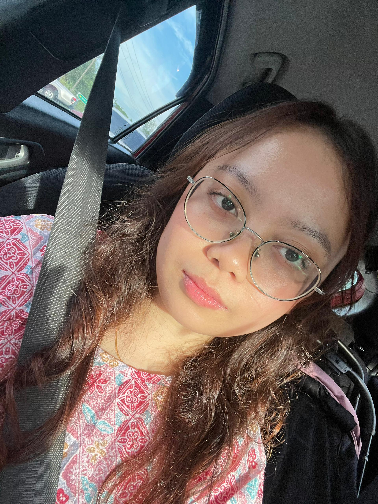
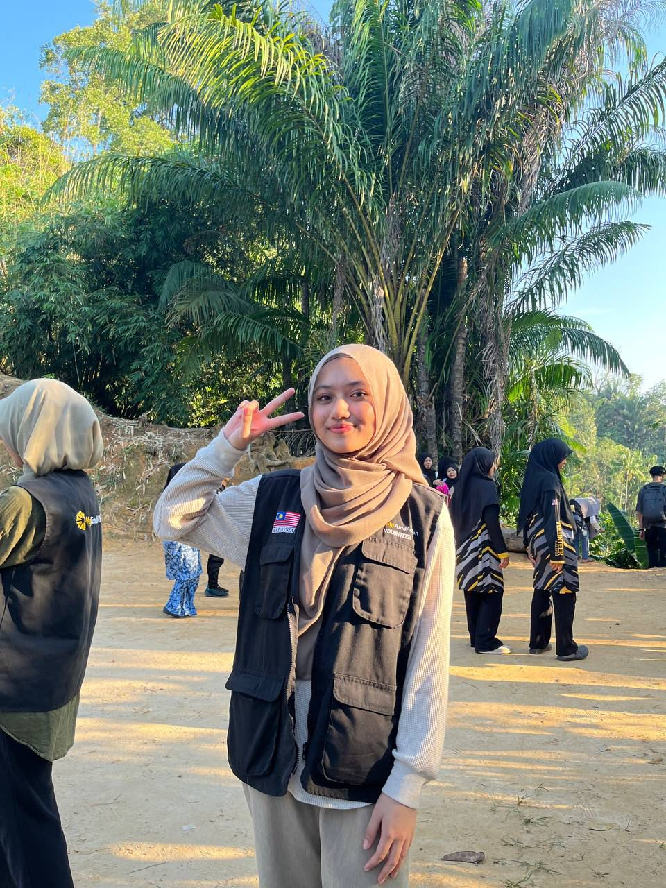
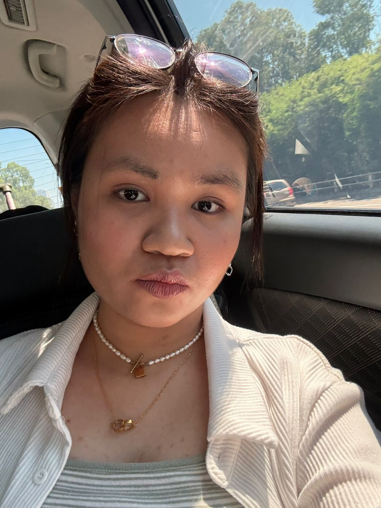
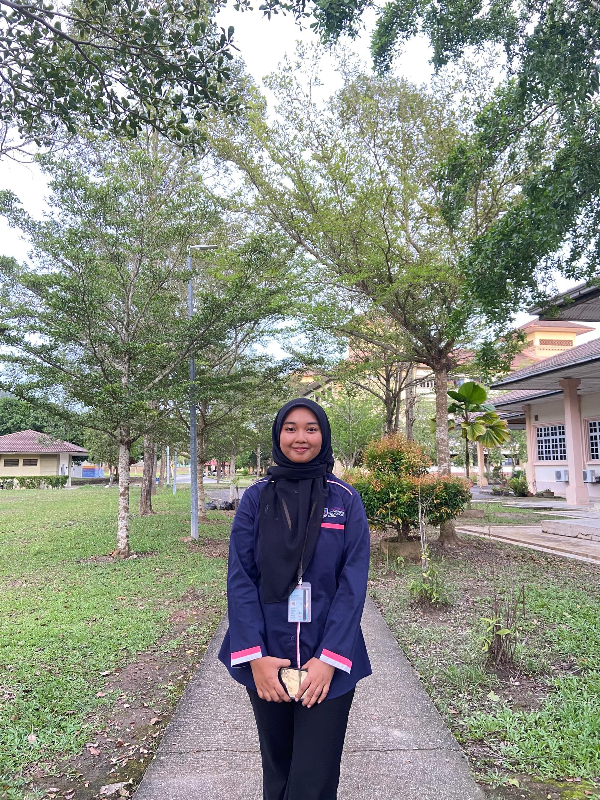
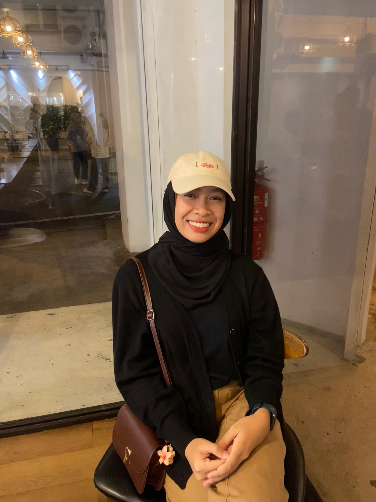

Partners in Crime (The Legal Kind)<3
Oh hey, you’ve found the Friends corner, aka the part of my life where the magic of laughter, inside jokes, and occasional chaos happens. This is the space where I celebrate the legends who keep my life fun, unpredictable, and also into a collection of unforgettable moments and stories worth retelling (sometimes with dramatic flair).
My friends are the ones who know me best, whether it’s finishing my sentences, roasting me in the most loving way possible, or hyping me up like I just won an Oscar. They’ve been there for all the random adventures, the unforgettable karaoke nights, and the occasional “How did we get here?” moments. They’re the ones who show up for the good times, the tough times, and the "remember when?" moments we can’t stop laughing about.
From solving life’s mysteries over coffee to laughing at our own ridiculousness, these people are my ultimate ride or die crew.
👭My Forever Fun Factory👭
My Friends from High School
|  |
| Aleya Sofia Binti Abdullah |
|  |
| Dayangku Qistiena Adreanna Binti Pengiran Mohd Khairuddin |
|  |
| Nur Hidayah Binti Masri |
My Friends from University
|  |
| Syafiqah Binti Hazric |
|  |
| Nur Qistina Binti Nazri |
Back to theee Top